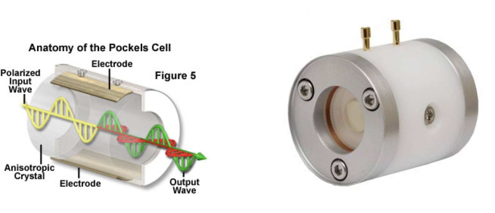
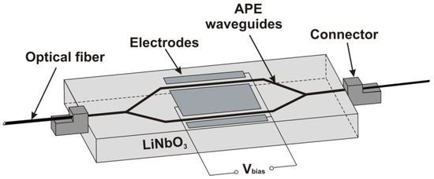
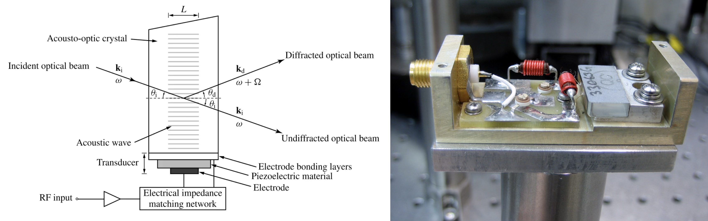

Introduction: Controlling Light with External Fields
In the previous lecture we saw that anisotropic materials — crystals with direction-dependent refractive indices — split light into ordinary and extraordinary rays and enable devices like wave plates. A natural next question is: can we control this anisotropy dynamically?
The answer is yes, and it leads to two of the most important families of active optical devices:
Electro-optic (EO) devices use an applied electric field to modify the refractive index tensor of a crystal. This allows fast (GHz) switching of polarization, phase, and amplitude.
Acousto-optic (AO) devices use a sound wave to create a periodic refractive index grating inside a medium. Light diffracts off this grating, enabling frequency shifting, beam deflection, and intensity modulation.
Both can be understood as perturbations of the dielectric tensor: the EO effect modifies it uniformly, the AO effect modifies it periodically. Both are essential building blocks in modern photonics: laser Q-switching, optical telecommunications, microscopy (AO beam scanning, SLMs for wavefront shaping), and spectroscopy.
These devices also connect directly to the physics of the Nonlinear Optics lecture. There we expanded the polarization of a medium as a power series in the driving field, \(P = \varepsilon_0\left(\chi^{(1)}E + \chi^{(2)}E^2 + \chi^{(3)}E^3 + \cdots\right)\), and saw how the higher-order terms let one wave mix with another. Electro-optics is the same expansion read with a different field: instead of a second strong optical wave, we apply a quasi-static voltage, so that the refractive index seen by the light becomes something we control electronically. The Pockels effect turns out to be exactly the \(\chi^{(2)}\) term of that expansion and the electro-optic Kerr effect a \(\chi^{(3)}\) term, which is why the same symmetry rules and the same crystals reappear here.
Part I: Electro-Optics
1. The Electro-Optic Effect
Physical Origin
When an external electric field \(\mathbf{E}_\text{ext}\) is applied to a crystal, it displaces the ionic sublattices and distorts the electron clouds, changing the polarizability and hence the refractive index. We can see exactly how by reusing the nonlinear polarization from the Nonlinear Optics lecture and remembering that the medium responds to the total field it feels, the sum of the slowly varying applied field and the fast optical field of the light wave.
Write that total field as
\[
E(t) = E_0 + E_\omega \cos(\omega t),
\]
where \(E_0\) is the quasi-static field set by the electrodes (the applied voltage divided by the gap) and \(E_\omega \cos(\omega t)\) is the optical wave whose index we want to find. Substituting into the polarization series
\[
P = \varepsilon_0\left(\chi^{(1)} E + \chi^{(2)} E^2 + \chi^{(3)} E^3 + \cdots\right)
\]
and keeping only the terms that oscillate at the optical frequency \(\omega\), since those are the ones the light actually experiences, gives
The terms we have dropped are the static \(\chi^{(2)} E_0^2\) polarization, the second harmonic at \(2\omega\), and the optical Kerr self-action proportional to \(E_\omega^2\) (the intensity-dependent index of the previous lecture); none of them change the wave at the original frequency \(\omega\). The bracket is therefore an effective susceptibility that the applied voltage can tune,
Because \(n^2 = 1 + \chi\), the index seen by the light is now field-dependent. Writing \(n^2 = n_0^2 + 2\chi^{(2)} E_0 + 3\chi^{(3)} E_0^2\) and using \(\Delta(n^2) = 2 n_0\, \Delta n\) for a small change,
The two terms are precisely the two electro-optic effects. The first, linear in the applied field, is the Pockels effect. It is governed by \(\chi^{(2)}\), the same susceptibility that drives second-harmonic generation, so it vanishes in any medium with a center of inversion and appears only in non-centrosymmetric crystals. The second, quadratic in the field, is the Kerr effect. It is governed by \(\chi^{(3)}\), carries no symmetry restriction, and is present in every material, including glasses and liquids.
The crystal-optics form. In an anisotropic crystal the index depends on the direction and polarization of the light, so the scalar result is promoted to a statement about the impermeability\(\left(1/n^2\right)_{ij}\), the tensor that defines the index ellipsoid of the next subsection. Expanding it in the applied field,
where \(r_{ijk}\) is the linear electro-optic (Pockels) tensor (third rank) and \(s_{ijkl}\) is the quadratic electro-optic (Kerr) tensor (fourth rank). These tensors are just the anisotropic bookkeeping for the coefficients we derived: converting Equation 1.1 with \(\Delta(1/n^2) = -(2/n^3)\,\Delta n\) shows that, up to sign and tensor-index conventions, \(r \propto \chi^{(2)}/n^4\) and \(s \propto \chi^{(3)}/n^4\). The same microscopic susceptibilities therefore fix the measured Pockels and Kerr coefficients, and the impermeability form is the one used in practice because it plugs straight into the index ellipsoid.
The Index Ellipsoid
The refractive index of an anisotropic crystal depends on the polarization and propagation direction of the light, and the device that keeps track of this is the index ellipsoid (or indicatrix):
To use it, take a wave travelling along a direction \(\mathbf{k}\) and cut the ellipsoid through its center with the plane perpendicular to \(\mathbf{k}\). The cross-section is an ellipse whose two semi-axes give the refractive indices of the two orthogonal polarizations the crystal supports for that direction, and the difference between them is the birefringence the wave sees.
An applied field changes the coefficients \(1/n^2\), which deforms and in general rotates this ellipsoid. In contracted (Voigt) notation, where the single index \(i = 1, \ldots, 6\) labels the six independent components of the symmetric impermeability tensor, the Pockels change is
with \(r_{ij}\) the \(6 \times 3\) electro-optic tensor whose entries are the coefficients tabulated in Table 1.1.
The decisive point is that the field does not merely stretch the existing axes, it can rotate them through the off-diagonal coefficients, and that is what makes a modulator possible. KDP is the classic case. With no field it is uniaxial, so a wave sent along the optic axis \(z\) meets a circular cross-section and sees no birefringence. A field \(E_z\) acts through \(r_{63}\) to add an off-diagonal \(xy\) term that rotates the principal axes by \(45^\circ\) and opens that circle into an ellipse, producing an induced birefringence \(\Delta n = n_o^3\, r_{63}\, E_z\) between the two new axes. The crystal becomes birefringent on demand, which is exactly what the Pockels cell of Section 4 exploits: light polarized so that it divides equally between the two induced axes picks up the voltage-controlled retardation of Equation 1.5, and a crossed analyzer turns that polarization change into an intensity change.
2. The Pockels Effect
Key Materials
Table 1.1— Common electro-optic crystals and their Pockels coefficients.
Crystal
Symmetry
Key coefficient
\(n_o\)
\(n_e\)
LiNbO\(_3\)
Trigonal 3m
\(r_{33} = 30.8\) pm/V
2.286
2.200
KDP (KH\(_2\)PO\(_4\))
Tetragonal \(\bar{4}2m\)
\(r_{63} = 10.6\) pm/V
1.514
1.472
BBO (\(\beta\)-BaB\(_2\)O\(_4\))
Trigonal 3m
\(r_{22} = 2.7\) pm/V
1.677
1.553
GaAs
Cubic \(\bar{4}3m\)
\(r_{41} = 1.6\) pm/V
3.37
—
It is no coincidence that LiNbO\(_3\), KDP and BBO appear in this table: they are the same crystals used for phase-matched second-harmonic generation in the Nonlinear Optics lecture. The strong, non-vanishing \(\chi^{(2)}\) that makes them efficient frequency converters is exactly what gives them a large Pockels response.
Phase Modulation
The most common configuration uses a longitudinal field (field parallel to light propagation along the optic axis \(z\)). For a crystal of length \(L\) with applied voltage \(V = E_z \cdot L\), the induced phase difference between the two polarization eigenmodes is:
Figure 1.1— Pockels effect: phase retardation and transmitted intensity as a function of applied voltage. Left: the induced birefringence creates a voltage-dependent phase shift between polarization components. Right: between crossed polarizers, the transmitted intensity follows \(I/I_0 = \sin^2(\pi V / 2V_\pi)\), enabling amplitude modulation.
3. The Kerr Effect
The quadratic (Kerr) electro-optic effect exists in all materials, including isotropic ones like glass and liquids. The induced birefringence is:
\[
\Delta n = \lambda\, K\, E^2
\tag{1.7}\]
where \(K\) is the Kerr constant (units: m/V\(^2\)). Typical values: \(K \approx 3.6 \times 10^{-12}\) m/V\(^2\) for nitrobenzene, \(K \approx 4.4 \times 10^{-14}\) m/V\(^2\) for water.
The Kerr effect is important in:
Kerr cells for ultrafast shutters (sub-picosecond response in liquids)
Self-phase modulation in optical fibers, where the light’s own field plays the role of \(E\) (the optical Kerr effect)
Kerr lens mode-locking in ultrafast lasers
The last two of these point straight back to nonlinear optics. The electro-optic Kerr effect of Equation 1.7 and the optical Kerr effect are both governed by the third-order susceptibility \(\chi^{(3)}\); they differ only in what supplies the field. Here a slowly varying applied voltage produces the static birefringence \(\Delta n \propto E^2\), whereas in self-phase modulation the intense light field itself plays the role of \(E\) and modulates its own index as \(\Delta n = n_2 I\). Seeing them as one effect is useful, because the Kerr constant \(K\) measured with a voltage and the nonlinear index \(n_2\) measured with an intense beam probe the same underlying nonlinearity.
Figure 1.2— Comparison of Pockels (linear) and Kerr (quadratic) electro-optic effects. Left: induced birefringence \(\Delta n\) as a function of applied field. The Pockels effect is linear and changes sign with the field; the Kerr effect is quadratic and always positive. Right: corresponding transmission through crossed polarizers.
4. EO Applications
Pockels Cell — Polarization and Amplitude Modulation
A Pockels cell consists of an EO crystal placed between two polarizers. By varying the applied voltage, the polarization state exiting the crystal changes continuously from linear → elliptical → circular → elliptical → linear (rotated 90°). Between crossed polarizers, this converts to amplitude modulation.

Figure 1.3— A Pockels cell: an electro-optic crystal placed between crossed polarizers, with electrodes applying a voltage that controls the polarization state of the transmitted light.
The action of the cell is most easily understood as a wave plate whose retardance is set electronically. From Equation 1.5 the two polarization components leave the crystal with a relative phase \(\Delta\phi = \pi V / V_\pi\), so the cell becomes a quarter-wave plate at \(V = V_\pi/2\) and a half-wave plate at \(V = V_\pi\). This is the sequence drawn in Figure 1.5: linearly polarized input turns elliptical, becomes circular at \(V_\pi/2\), and at \(V_\pi\) is linear again but rotated by \(90^\circ\), so a crossed analyzer now passes it fully. The crossed-polarizer transmission is just the amplitude-modulation curve already plotted in Figure 1.1; biased at quarter-wave it gives linear analog modulation, and swept over \(V_\pi\) it acts as a fast on/off shutter.
The same shutter action is what makes a Pockels cell the standard Q-switch. Holding the cell at high loss keeps the laser cavity below threshold while the gain medium stores energy; switching the voltage within a few nanoseconds suddenly restores the low-loss state, and the stored energy is dumped as a single giant pulse. Because the response follows the applied field rather than any slow material relaxation, the switching is essentially instantaneous on these timescales.
Applications:
Q-switching of pulsed lasers (nanosecond switching)
Cavity dumping for ultrashort pulse extraction
Optical telecommunications (GHz intensity modulation in LiNbO\(_3\) Mach-Zehnder modulators)
Spatial light modulators (SLMs) using liquid crystal arrays — each pixel is an independently addressable EO cell
Mach-Zehnder Modulator
Modern optical communications use integrated LiNbO\(_3\) Mach-Zehnder interferometers where the EO effect shifts the phase in one arm. The output intensity is:
\[
I = I_0 \cos^2\!\left(\frac{\pi V}{2 V_\pi}\right)
\]
This provides linear modulation around the quadrature bias point \(V = V_\pi/2\).
What the interferometer really does is convert the phase shift of Equation 1.5 into a power change that a detector can register. A photodiode responds to intensity, not to optical phase, so the bare phase modulator of Section 2 produces a signal it cannot see. The Mach-Zehnder solves this by splitting the light into two waveguide arms, advancing the phase of one arm by \(\Delta\phi = \pi V / V_\pi\), and recombining them: the relative phase now decides whether the two copies add or cancel, which is the \(\cos^2\) transfer function above. Digital links drive the voltage between the bright fringe (\(\Delta\phi = 0\)) and the dark fringe (\(\Delta\phi = \pi\)) for on/off keying, complementing the analog quadrature bias just mentioned.
This is a genuinely different route to amplitude modulation than the Pockels cell. The cell acts on a single beam, rotating its polarization so that a crossed analyzer passes more or less light; the Mach-Zehnder leaves the polarization untouched and interferes two copies of the beam instead. Both start from the same electro-optic phase shift but read it out differently, one by polarization and the other by interference.
Practical modulators drive the two arms in push-pull, one at \(+\Delta\phi/2\) and the other at \(-\Delta\phi/2\). The phase difference then builds up twice as fast, which halves the required \(V_\pi\), and because the arms move oppositely the unwanted frequency chirp largely cancels, important at the tens-of-gigahertz line rates of optical communications. To reach those speeds the electrodes are built as travelling-wave transmission lines, so that the radio-frequency drive runs alongside the light at a matched velocity instead of charging the device as a single capacitor.

Figure 1.4— Sketch of an integrated LiNbO\(_3\) Mach-Zehnder interferometer: light is split into two waveguide arms, where an applied voltage shifts the phase in one arm via the electro-optic effect, and recombines to produce intensity modulation at the output.
Figure 1.5— Polarization state evolution through a Pockels cell as voltage increases from \(0\) to \(V_\pi\). At \(V = 0\) the light is linearly polarized (input). At \(V_\pi/4\) it becomes elliptical, at \(V_\pi/2\) circular, and at \(V_\pi\) it is linear again but rotated by 90° — fully transmitted by a crossed analyzer.
Part II: Acousto-Optics
5. Sound Waves as Refractive Index Gratings
An acoustic wave propagating through a transparent medium creates a periodic modulation of the density, and hence of the refractive index:
\[
n(x, t) = n_0 + \Delta n \sin(\Omega t - K x)
\tag{2.1}\]
where \(\Omega = 2\pi f_s\) is the sound angular frequency, \(K = 2\pi / \Lambda\) is the acoustic wavevector, \(\Lambda\) is the acoustic wavelength, and \(\Delta n\) is the amplitude of the index modulation (typically \(\Delta n \sim 10^{-5}\) to \(10^{-4}\)).
This periodic structure acts as a phase diffraction grating for light. Because the grating is moving (at the speed of sound \(v_s = \Lambda f_s\)), it also shifts the frequency of the diffracted light — a key difference from static gratings.
The Photoelastic Effect
The index modulation arises from the photoelastic (elasto-optic) effect:
\[
\Delta n = -\frac{1}{2}\, n_0^3\, p\, S
\tag{2.2}\]
where \(p\) is the relevant photoelastic coefficient and \(S\) is the acoustic strain amplitude.
6. Bragg Diffraction
When the acoustic wavelength \(\Lambda\) is much larger than the optical wavelength \(\lambda\) and the interaction length \(L\) is long enough, we enter the Bragg regime. The condition for strong diffraction is given by the Klein-Cook parameter:
The diffracted beam is frequency-shifted by \(\pm f_s\) (typically 40–400 MHz).
This pair of conditions, momentum conservation \(\mathbf{k}_d = \mathbf{k}_i \pm \mathbf{K}\) together with energy conservation \(\omega_d = \omega \pm \Omega\), is the same three-wave phase matching that governs the \(\chi^{(2)}\) processes of the Nonlinear Optics lecture. The only difference is that the third wave is an acoustic phonon rather than an optical photon, so the diffracted light is shifted by the small sound frequency instead of being combined into a new optical wave. In this sense an acousto-optic frequency shifter is the phononic counterpart of sum- and difference-frequency generation: up-shifting absorbs a phonon, down-shifting emits one.
Figure 2.1— Acousto-optic Bragg diffraction. Left: an acoustic wave travelling upward through the medium (wavevector \(\mathbf{K}\), frequency \(f_s\)) writes a stack of moving index planes spaced by the acoustic wavelength \(\Lambda\). Light incident at the Bragg angle \(\theta_B\) (red, \(\omega\)) is partly diffracted into the first order (green, up-shifted to \(\omega+\Omega\)) and partly transmitted straight through (dashed). Incident and diffracted beams are symmetric about the mean propagation direction. Right: the same condition as a wavevector triangle \(\mathbf{k}_d = \mathbf{k}_i + \mathbf{K}\), with \(\mathbf{k}_i\) and \(\mathbf{k}_d\) of equal length on the dashed circle, so each makes the angle \(\theta_B\) with the mean direction. The angle is exaggerated for clarity; real Bragg angles are a fraction of a degree.
7. Diffraction Efficiency
In the Bragg regime, the diffraction efficiency (fraction of incident power diffracted into the first order) is:
where \(P_s\) is the acoustic power, \(H\) is the transducer height, and \(M_2 = n_0^6 p^2 / (\rho v_s^3)\) is the acousto-optic figure of merit — a material property that determines how efficiently sound modulates light.
Table 2.1— Acousto-optic figures of merit for common materials.
Figure 2.2— Acousto-optic diffraction efficiency. Left: efficiency \(\\eta\) as a function of acoustic power for different interaction lengths, showing the \(\\sin^2\) dependence. 100% diffraction is achievable. Right: angular selectivity — the diffraction efficiency drops sharply when the incidence angle deviates from the Bragg angle, with selectivity improving for longer interaction lengths.
8. AO Devices and Applications
AO Modulator (AOM)
Switches beam on/off by deflecting it into the first diffraction order. Switching time \(\tau \approx d / v_s\) where \(d\) is the beam diameter — typically 10–100 ns.

Figure 2.3— Acousto-optic modulator (AOM). Left: the principle setup, with an RF-driven transducer launching an acoustic wave into the medium and deflecting the incident beam into the first diffraction order. Right: an opened AOM showing its internal components.
AO Deflector (AOD)
By varying the sound frequency \(f_s\), the Bragg angle changes, scanning the diffracted beam over an angular range \(\Delta\theta \propto \Delta f_s\). The number of resolvable spots is \(N = \tau \cdot \Delta f_s\) (time-bandwidth product).
Figure 2.4— Acousto-optic deflector. Left: changing the radio-frequency drive \(f_s\) changes the acoustic wavelength and hence the Bragg angle, so the first-order beam is steered to a different spot on the screen while the undiffracted zeroth order stays fixed. Three drive frequencies are shown and the deflection angles are exaggerated for visibility. Right: the deflection angle grows essentially linearly with the drive frequency, \(\theta_B \approx \lambda f_s /(2 n v_s)\), here for TeO\(_2\) at \(\lambda = 633\) nm; the coloured dots mark the three frequencies of the left panel.
AO Tunable Filter (AOTF)
Selects a narrow spectral band from broadband light — only the wavelength satisfying the Bragg condition at the given sound frequency is diffracted. Because the phase-matched wavelength is set electronically by the drive frequency, the AOTF is a solid-state filter with no moving parts whose passband can be swept across the spectrum in microseconds.
Figure 2.5— Acousto-optic tunable filter (AOTF). Left: broadband light enters the cell, and for a given drive frequency \(f_s\) only the one wavelength that satisfies the Bragg condition is diffracted out as a narrowband beam (shown in green), while the rest of the spectrum passes straight through as the zeroth order. Right: the diffraction efficiency forms a narrow passband centred on that wavelength, with the small side lobes characteristic of a finite interaction length. Changing \(f_s\) tunes the centre wavelength electronically, a higher drive frequency selecting a shorter wavelength (\(\lambda \propto 1/f_s\)); three drive frequencies are shown.
AO Frequency Shifter
The diffracted beam is shifted by exactly \(\pm f_s\). Used in heterodyne detection, laser Doppler velocimetry, and optical frequency comb stabilization.
Figure 2.6— Acousto-optic frequency shifter. Left: the diffracted beam leaves with its optical frequency shifted by exactly the drive frequency, \(\omega \to \omega + 2\pi f_s\) (the \(+1\) order absorbs an acoustic phonon; the \(-1\) order emits one and gives \(\omega - 2\pi f_s\)). The shift is far too small to see directly, but recombining the shifted beam with an unshifted reference on a photodetector makes the intensity oscillate at the difference frequency, a clean beat note at \(f_s\) (the optical carrier is drawn schematically; in reality \(\omega/f_s \sim 10^{7}\)). Right: in laser Doppler velocimetry the beat sits at \(f_s\) for a target at rest and moves to \(f_s + f_D\) when it moves, with \(f_D = 2v/\lambda\). Because the carrier \(f_s\) exceeds the Doppler shift, motion toward (\(v>0\)) and away (\(v<0\)) give beats above and below \(f_s\), so the sign of the velocity is recovered, which a shifter-free measurement of \(|f_D|\) alone cannot provide.
9. Connection to Fourier Optics
Both electro-optic and acousto-optic effects have a deep connection to the Fourier optics framework that we will develop in the next lecture:
Acousto-optic diffraction is spatial frequency manipulation. The sound wave creates a sinusoidal phase grating with spatial frequency \(K = 2\pi/\Lambda\). When light passes through, new spatial frequency components appear in the transmitted field at \(k_x \pm K\). This is a direct Fourier shift — the acoustic grating translates the optical spectrum in \(k\)-space.
Electro-optic phase modulation is temporal frequency manipulation. A sinusoidally driven Pockels cell modulates the phase at frequency \(\Omega\), creating new spectral sidebands at \(\omega \pm \Omega\). In the time-frequency Fourier domain, this is again a shift theorem.
Both devices therefore act as frequency mixers — one in the spatial domain, the other in the temporal domain. This perspective will be central when we discuss structured illumination microscopy (SIM), where a spatial frequency grating extends the observable passband of the microscope.